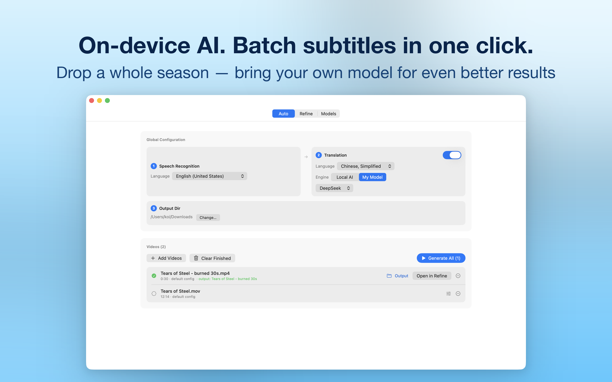
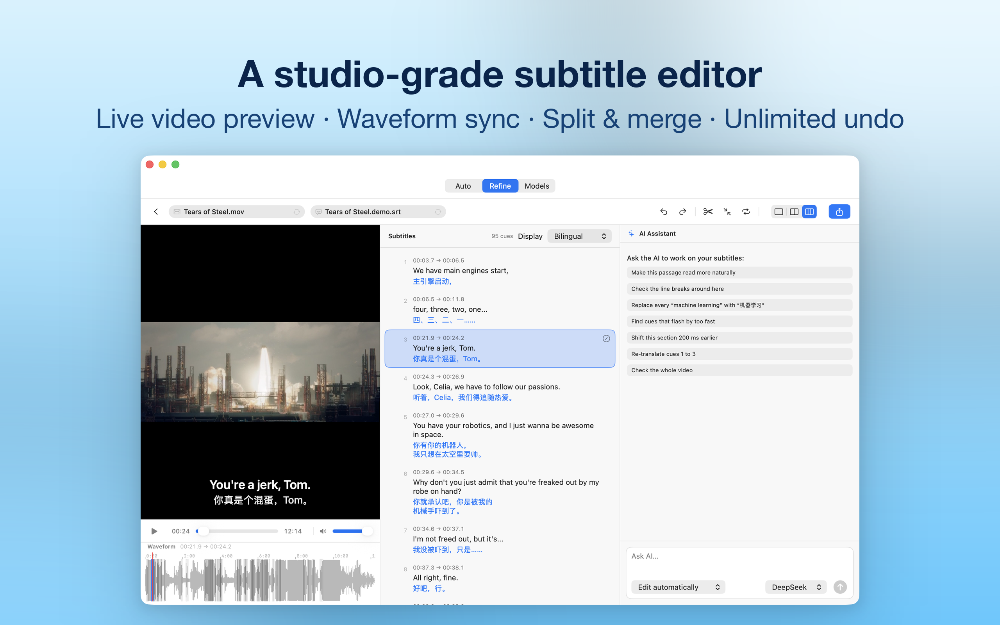
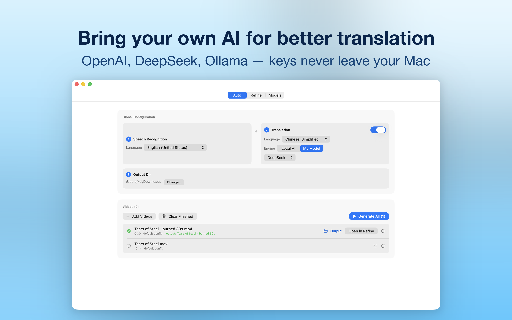

TAB 01 · AUTO
Batch, hands-off
Drop several videos and get subtitle files. Speech recognition, translation and export run as one queue — per-video overrides, live progress, one-click retry.

KenjaSub is an AI subtitle editor for Mac. Drop in any video — transcription runs entirely on your machine, translation happens in context with the AI model of your choice, and a frame-accurate studio polishes every line. SRT & WebVTT out.

From raw video to shipped bilingual subtitles without leaving the app — batch it, refine it, and bring your own model.
Drop several videos and get subtitle files. Speech recognition, translation and export run as one queue — per-video overrides, live progress, one-click retry.

An mpv-based player opens MKV, WebM and AVI natively. Cue list and waveform stay in sync; drag timings, split and merge cues, shift the whole track, undo anything, export SRT or WebVTT.
Any OpenAI-compatible provider — OpenAI, DeepSeek, OpenRouter, Ollama, LM Studio or your own endpoint. Keys live in your Mac's Keychain, never in plain files.

Not a cloud dashboard — a native Mac tool with an opinion about quality.
Speech recognition runs with Apple's SpeechAnalyzer. Your audio never leaves the Mac — no uploads, no queue on someone else's server.
Lines are translated in context windows, so pronouns, tone and recurring names stay consistent from opening scene to credits. Six registers, from Literal to YouTube.
Retranslate a scene, shorten a line, fix a name — conversationally. "Ask before changes" stages every edit as a reviewable diff; automatic mode applies instantly with one-click undo.
Drag cue boundaries on the waveform, set in/out points at the playhead, type exact timecodes, split, merge, or shift the entire track. Full undo history included.
Native MKV, WebM and AVI playback via mpv. Bilingual SRT imports with automatic language detection — your existing translations come along.
Reading-speed and line-length checks keep subtitles comfortable on screen. When a source language or model answer looks wrong, KenjaSub stops and tells you.
KenjaSub is private the way a hammer is private — it's a tool on your machine, not a service with a login. The rare data that moves, moves only when you choose an engine and only to the provider you configured.
No. Speech transcription runs entirely on your Mac with Apple's SpeechAnalyzer — audio never leaves the device. When you choose an AI translation engine, subtitle text is sent only to the provider you configured, only when you run that engine.
Any OpenAI-compatible provider: OpenAI, DeepSeek, OpenRouter, Ollama, LM Studio or your own endpoint — keys live in your Mac's Keychain. A fully local option using Apple's Translation framework is built in as well.
The player opens MKV, WebM and AVI natively (mpv-based), plus standard MP4 and MOV. Subtitles import and export as SRT and WebVTT, including bilingual SRT files with automatic language detection.
Yes — drag boundaries on the waveform, set in/out points at the playhead (⌘[ / ⌘]), type exact timecodes in the edit sheet, split and merge cues, shift the whole track earlier or later, and undo any of it.
macOS 26 or later. On-device transcription and translation use Apple's neural frameworks, so Apple Silicon is recommended.
No — AI features are strictly bring-your-own-key. You add a provider and key of your choice; KenjaSub never bundles or resells model access, which keeps your costs and your data under your control.